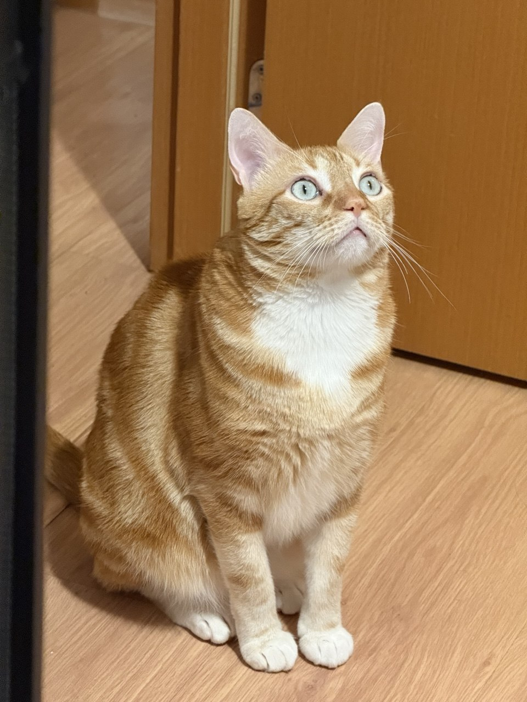

Essa é uma página web em HTML sobre o aluno Hugo Henrique de Andrade Cardoso. Quem sou eu:
Tenho 23 anos. Tenho 23 anos e entrei no curso em 2024 com 20 anos. E escolhi o curso pelo gosto por resolver problemas e costume de interagir com o computador.
Desde pequeno tenho interesse por jogos por incentivo do meu pai que me colocou para jogar Need For Speed com 2 anos de idade. Desde então, sempre busquei conhecer novos jogos e tentar modificar eles, o que me fez buscar pelo menos o básico sobre desenvolvimento, o que me fez criar gosto por programação.
